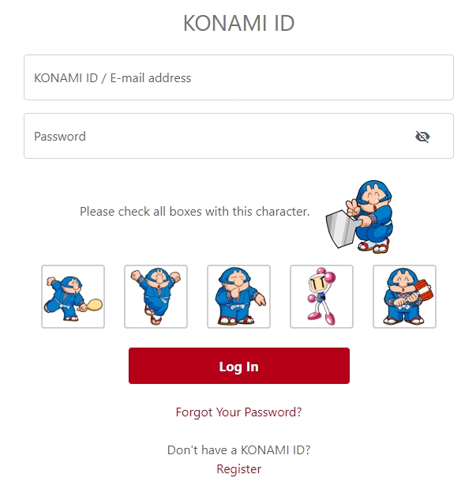
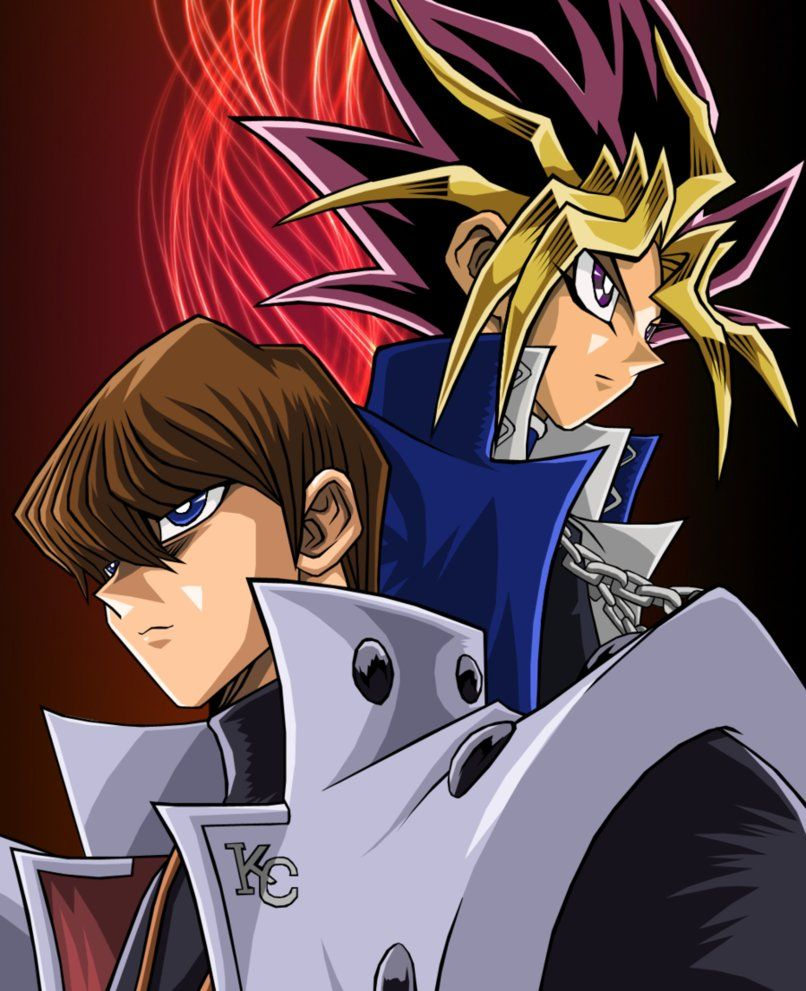
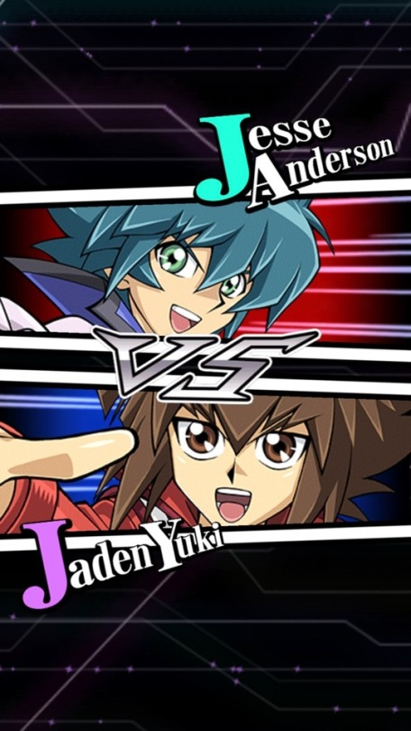

Primeiramente, antes de iniciar o jogo associe sua conta a um KONAMI ID:
Caso você perca sua conta, o Konami ID permite que você recupere seus dados salvos no aplicativo, É muito simples de utilizar. Clique em configurações, Configurações de Transferência de dados, feito isso o seu navegador irá abrir para iniciar a transferência. Aí você poderá fazer o login ou gerar um Konami ID.

Qual personagem escolher no começo do jogo? Yami Yugi ou Seto Kaiba?
No começo do jogo, você deve escolher um duelista inicial, seja ele o Yugi ou o Kaiba. Bom, essa escolha não é muito importante, pois você poderá mais tarde desbloquear o personagem não escolhido no nível 15.

duelo rápido:
Diferente do jogo tradicional de cartas ou do anime, no duel links é utilizada uma forma diferente de duelo. Nos chamados “Duelos Rápidos'', temos 4000 pontos de vida ( Exatamente igual o do anime clássico), entretanto iniciamos nossa mão com 4 cartas, e nosso campo é mais limitado, podendo ter somente 3 monstros invocados e 3 cards de magia/armadilhas setados . Além do fato que nosso Deck é mais limitado, podendo conter no máximo 30 cartas.

Compre Booster Packs e planeje o seu deck:
Tanto como no TCG e no Duel Links é possível comprar booster packs, que dão cartas novas aos jogadores, ajudando a montar decks melhores. Não fique economizando gemas, compre sem piedade os booster packs no jogo, que vão te ajudar a ter um deck forte!
O meta atual não permite muitas variações de decks, entretanto você deve planejar o seu deck desde o início do jogo, para que você evite gastar gemas de forma desnecessária. Cada Booster Pack tem uma certa combinação de cartas diferentes, ou seja tudo vai depender do que você planeja fazer! Mas lembre-se que alguns packs serão removidos em breve.
Derrote todos os NPC’s:
No jogo, enfrentamos os chamados “duelistas padrão”. Depois de derrotados, eles demoram um certo tempo para reaparecer no jogo, mas eles voltam completamente quando você passa de estágio/fase no jogo. Quanto mais vezes você enfrentar eles, mais recompensas você vai ganhar. Isso também te ajuda a economizar Orbes de Duelo.
Utilize monstros de LUZ e Cartas Armadilhas!
Invocar monstros do Atributo LUZ e utilizar cartas armadilhas de forma frequente desde o início do jogo é a chave para desbloquear os duelistas lendários Ishizu e Odion de forma rápida. Para liberá-los, é necessário invocar 200 monstros de luz, e usar 300 cartas armadilhas respectivamente. Já para liberar o Bandit Keith você vai precisar vencer 50 vezes os duelistas lendários, e o Mako, você vai precisar de 150 invocações por tributo (lembrando que eles são os personagens mais fáceis de desbloquear).
Vença duelos com uma pontuação alta!
Isso é algo muito importante no Yu-Gi-Oh! Duel Links. Após cada duelo, você será pontuado com base no que aconteceu em cada duelo. Quanto maior a pontuação, maior a quantidade de recompensas que você pode ganhar. A cada 1000 pontos, você ganha um baú, neste baú pode conter chaves de portal, ouro, gemas e até mesmo cartas raras. Especialmente se você estiver enfrentando um duelista lendário.
Sempre visite o Mercador de Cartas!
O mercador de cartas é liberado quando você alcança a fase 7, e oferece cartas que você não pode obter comprando em booster packs, duelos com duelistas lendários ou subindo o nível de certos personagens. Ele é muito importante, pois você terá acesso a cartas realmente raras, como a Besta Mística Cerberus, que será uma carta importante para farmar adversários no futuro. Você vai precisar de itens como jóias de atributo ou jóias de raridade, além do Ouro.